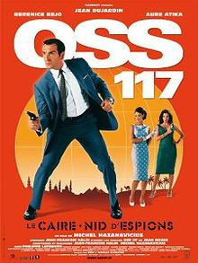
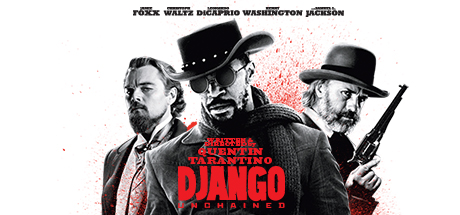
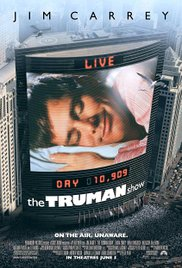

|  | OSS 117Égypte, 1955, le Caire est un véritable nid d'espions. Tout le monde se méfie de tout le monde, tout le monde complote contre tout le monde : Anglais, Français, Soviétiques, la famille du Roi déchu Farouk qui veut retrouver son trône, les Aigles de Kheops, secte religieuse qui veut prendre le pouvoir. Le Président de la République Française, Monsieur René Coty, envoie son arme maîtresse mettre de l'ordre dans cette pétaudière au bord du chaos : Hubert Bonisseur de la Bath, dit OSS 117. |
|  | DjangoIn the late 1850's, former dentist turned bounty hunter Dr King Schultz buys the freedom of a man named Django from a slave trader duo in a quest to find and kill some men he wants dead. ... With the help of a German bounty hunter, a freed slave sets out to rescue his wife from a brutal Mississippi plantation owner. |
 | The Truman ShowIn this movie, Truman is a man whose life is a fake one... The place he lives is in fact a big studio with hidden cameras everywhere, and all his friends and people around him, are actors who play their roles in the most popular TV-series in the world: The Truman Show. ... But Truman is not happy with his life. |